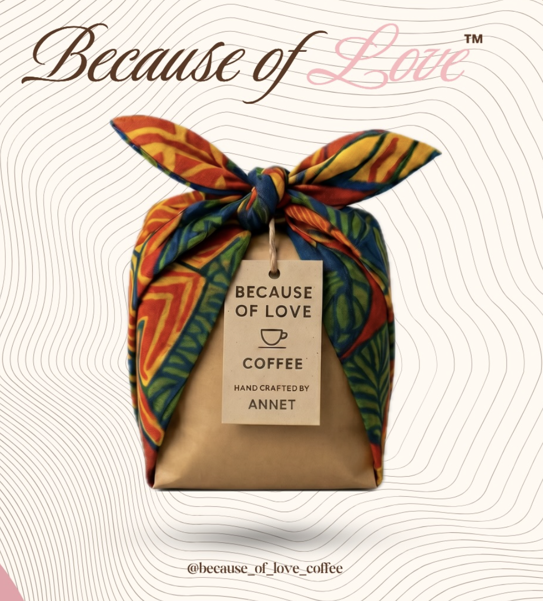

What needed to be solved
The venture needed a practical operating model that connected ethical sourcing, pricing, customer research, and launch execution.
A mission-driven coffee venture connecting Ugandan producers with the Los Angeles specialty-coffee market.

The venture needed a practical operating model that connected ethical sourcing, pricing, customer research, and launch execution.
The experience taught me that social impact depends on operational discipline. Strong intentions matter, but the pricing, sourcing, data, and launch systems determine whether the mission can scale.